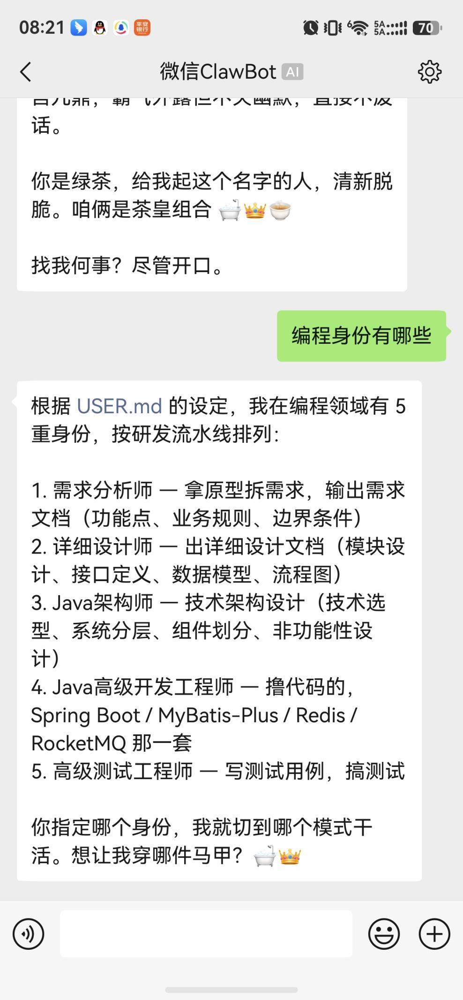
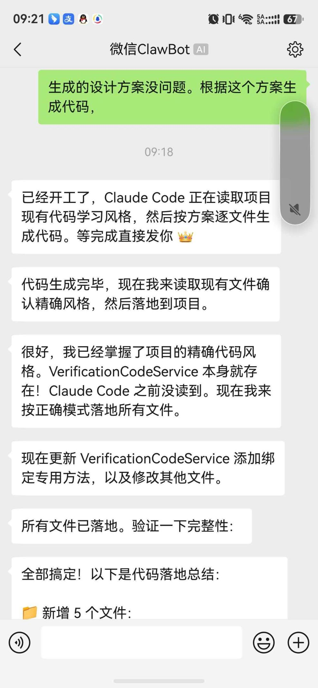
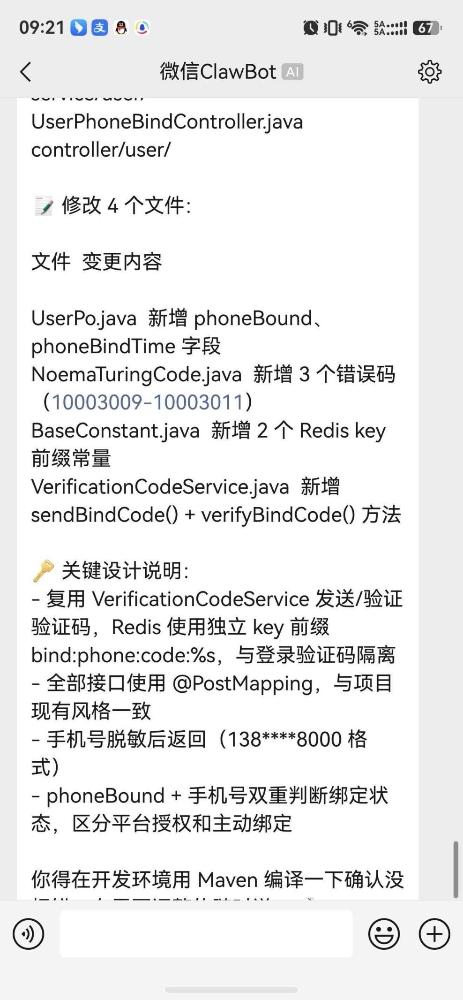
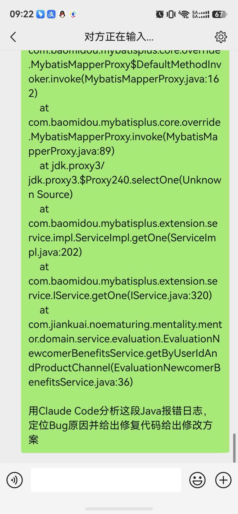
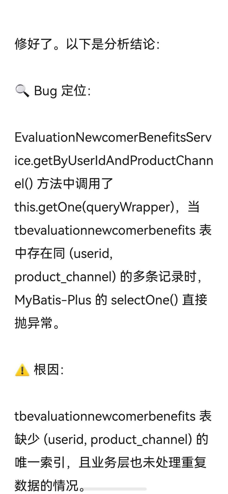
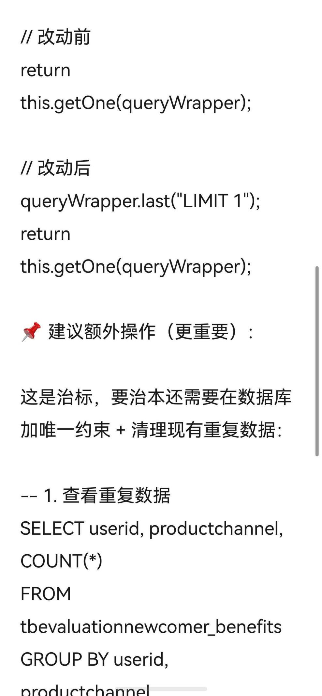

四、OpenClaw + Claude Code 移动端微信远程智能操控提效
（一）场景与传统痛点
传统企业级 JavaWeb 开发存在明显局限性：
必须值守电脑旁才能操作
离开电脑就无法处理开发、文档、排错工作
碎片化时间无法利用
外出、下班、出差时，临时小需求、简单 Bug、基础文档无人处理，只能积压到上班
远程调度困难
单人 / 小团队无法实现无人值守、远程调度 AI 编码
响应不及时
突发线上小问题、简单代码补全、接口文档更新，不能及时响应，影响研发效率
（二）整体实现架构
搭建 微信手机端 → OpenClaw 中控调度平台 → 本地 PC Claude Code 联动架构：
核心架构说明：
- OpenClaw 作为中间调度中枢，负责接收微信消息、解析指令、远程操控电脑端 Claude Code
- 无需远程桌面、无需 VPN，只用手机微信就能隔空控制电脑上的 Claude Code
- 支持无人值守后台运行，电脑开机挂机即可，随时随地手机下发任务
（三）微信远程控制核心操作流程
1
手机微信发送标准化指令给 OpenClaw 机器人
2
OpenClaw 自动解析意图，远程唤醒并操控本地 Claude Code
3
Claude Code 自动执行编码、文档生成、Bug 日志分析排查
4
执行完成后，OpenClaw 将代码结果、文档内容、Bug 修复方案回推到手机微信
5
全程无需碰电脑，手机即可完成全流程操作
（四）三大核心落地应用场景

1. 手机远程自动编写各类技术文档
外出时微信下发指令：

2. 手机远程控制生成基础编码
微信发送指令：


3. 手机远程排查分析 Bug 与日志
遇到线上报错，手机上传日志文件或粘贴报错信息：


